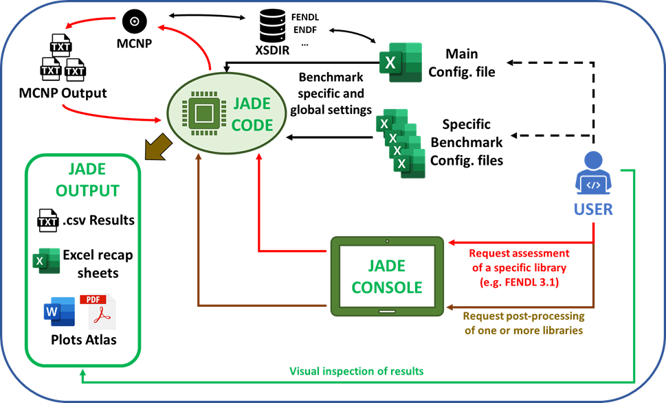

JADE in a nutshell
{kind=link}
JADE is a new tool for nuclear libraries V&V. Brought to you by NIER, University of Bologna (UNIBO), Fusion For Energy (F4E), and UK Atomic Energy Authority (UKAEA). JADE is an open source, system agnostic, Python 3 based software able to:
automatically build a series of MCNP input file using different nuclear data libraries;
sequentially run simulations on such inputs;
automatically parse and post-process all the generated MCNP outputs (e.g. mctal and fmesh).
The benchmarks implemented by default are divided between computational and experimental benchmarks. The post-processing output includes:
raw data in .csv files containing the entire tallied output from the simulations;
formatted Excel recap files;
Word and PDF atlas collecting the plots generated during the post-processing.
Additional JADE features are:
run JADE with the transport codes OpenMC and Serpent.
the possibility to implement user-defined benchmarks;
operate on the material card of an MCNP input (e.g. create material mixtures, translate it to a different nuclear data library or switch between atom and mass fraction);
print a recap of the material composition of an MCNP input;
modify the suffix of .ace library;
produce default reaction file for D1S-UNED MCNP patch inputs.
When using JADE for scientific publications you are kindly encouraged to cite the following papers:
D. Laghi et al, 2020, “JADE, a new software tool for nuclear fusion data libraries verification & validation”, Fusion Engineering and Design, 161 112075, doi: https://doi.org/10.1016/j.fusengdes.2020.112075.
D.Laghi, M. Fabbri, S. La Rovere, L. Isolan, R. Pampin, A. Portone and M. Sumini, 2022, “Status of JADE, an open-source software for nuclear data libraries V&V”, Fusion Engineering and Design, 187 113380, doi: https://doi.org/10.1016/j.fusengdes.2022.113380
For additional information contact: davide.laghi01@gmail.com
For additional information on future developments please check the issues list on the JADE GitHub repository.
See also
MCNP, Werner C.J., 2017, “MCNP User’S Manual Code”, Los Alamos: LAUR-17-29981 (version 6.2).
D1S-UNED, P. Sauvan et al, 2020, “D1SUNED system for the determination of decay photon related quantities”, Fusion Eng. Des., 151 111399.